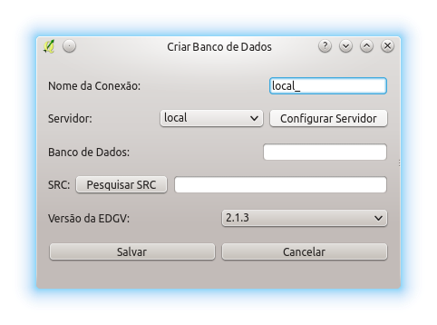

Observação: Caso se deseje acessar um banco de dados já criado em vez de criar um novo através do DSG Tools, é possível utilizar a ferramenta Adicionar camada PostGIS. As listas de domínio, no entanto, não poderão ser acessadas normalmente. Para tanto, basta configurar o servidor e carregar as camadas/categorias através do plugin no menu "Ferramentas de Camadas".
A criação de bancos de dados em PostGIS é feita a partir da seleção de:
escolha de um servidor previamente cadastrado (Servidor:) ou crie um clicando em Configurar Servidor;
definição de um nome para o banco de dados (Banco de Dados:);
escolha de um sistema de referência espacial (SRS:); e
seleção da versão da ET-EDGV (Versão da EDGV:) que será usada para a criação do banco de dados.
